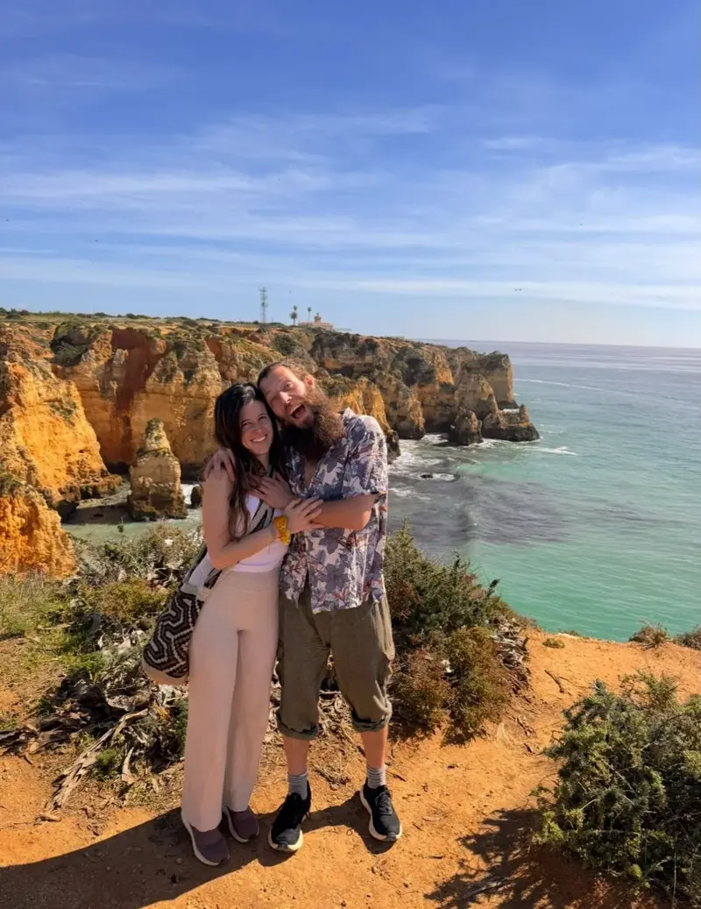

Dear fellow gardener, lover, guardian...
We are Benjy & Sofia.
Earth lovers, regenerative educators, permies, yogis, ocean lovers, community builders and lifelong students of nature. Dreamers and doers. Always learning. Always evolving. Perfectly imperfect.


Awakening Eden grew from a question: how can our lives help life flourish?
For years we gathered the films, books, teachers, land-based wisdom, spiritual practices and lived experiences that helped us move from overwhelm into direction. Awakening Eden is our way of sharing those sparks as a calm, practical home for positive change.
We believe regeneration begins within us and continues through our relationships, our choices, our gardens, our communities and the living Earth. Mystical language can open imagination, but our work remains rooted in humility, discernment and grounded next steps.
Our vision
Awakening Eden is Benjy & Sofia’s living platform for regeneration — a Living Library, a community and a growing network turning inspiration into grounded action.
We share beautiful, practical ways to regenerate ourselves, our communities and the Earth: from yoga, breath and inner ecology to living soil, food forests, syntropic agroforestry, water resilience and constructive local action. Online we share what helps. On the ground, in Central Portugal, we learn, design, plant, gather and collaborate.
Longer term we hope to unite people, organisations and ethical funding to create living demonstration landscapes and regenerative learning and healing places — and, in time, a rooted home and base from which to tend the work.
Where this stands today. The Living Library, the guides and Benjy’s land work exist now. The demonstration landscapes, learning places and land are a direction we are working toward, not something we have built. They would need partners, collaboration and funding, and if a real land or funding model takes shape we will describe its ownership and finances plainly — including what is a shared public benefit and what is our own home.


Our promise
Leave every person, page, project and place a little more alive than we found it.
Hope with roots
Inspiration connected to real projects, practical knowledge and one next step.
Interbeing
Care for people, soil, water, animals, ecosystems and the relationships holding life together.
Practical love
Beautiful ideas translated into service, stewardship and grounded action.
Joyful learning
A place to breathe, wonder, experiment, laugh, learn and grow together.

Walk beside us.
Follow the living journey
See land life, regenerative experiments, new guides and honest lessons as Awakening Eden grows.